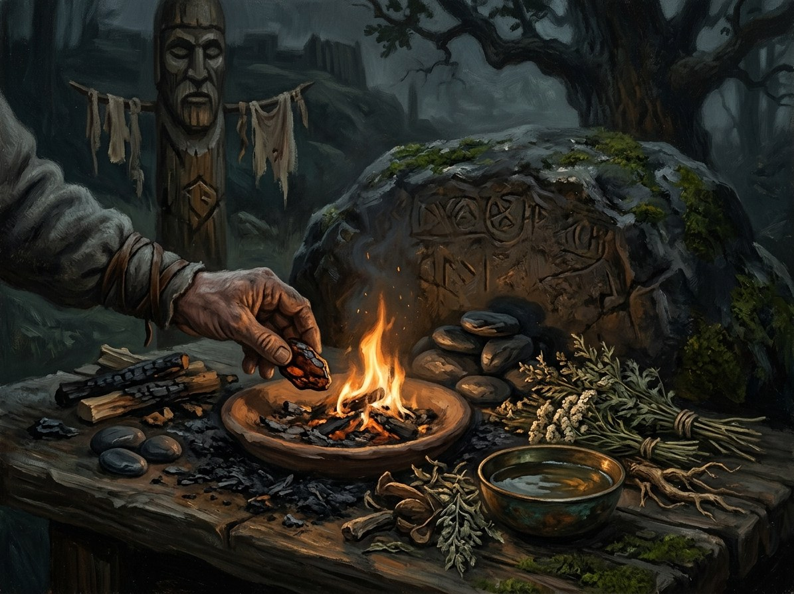

Užkalbėjimai (charms)¶
What it is¶
Spoken charms: Kalba’s humble cousin, folk word-magic that needs no gift, only the exact words learned from a living teacher and a medium (water, bread, salt, linen thread, a knife).
Užkalbėjimai (charms)

Užkalbėjimai (charms) · school¶
Tipas |
school |
Family |
asked |
Pastaba |
Užkalbėjimai: traditional spoken folk charms, whispered prayers, and herbal chants. |
Who can use it (path & tier)¶
Tier 1: the žiniuonis or herb-woman, the midwife, the village healer. Thousands in 1382. Patron: Laima. Learned only from a living teacher.
How it works (medium, words, timing)¶
Whispered three or nine times, often over water, bread or salt. It works on one person and one ailment or danger at a time: stopping bleeding, drawing snake venom, calming a horse, taking away fright, warding a house from fire for a night.
Kaina¶
Small but personal: the charmer takes a trace of what they remove (a headache, a cold hand, a nightmare); healers who charm too much grow strange. A charm said for money works at half strength, since payment is already „giving back“.
Limits & counters¶
A charm told to the wrong person dies for the teller; charms fail against someone who does not believe they are being helped (Law of Truth). After the Unbinding they are the peasantry’s chief defence against unbound spirits, condemned by the priests, quietly used by village ones. They cannot work a mortal wound alone; a bleeding-charm plus a Rasos-herb poultice saves wounds that Water cannot.
Folk basis [Historical record]¶
[Historical record]. Lithuanian užkalbėtojai and žiniuonys kept a large oral tradition of charms against snakebite, bleeding, fright (išgąstis), toothache, fire and the evil eye, whispered three or nine times over water, bread or salt, and traditionally passed to a younger person of the opposite sex, or lost. The texts survive from folklore archives of the 19th–20th centuries, often Christianised.
Notable practitioners¶
Village healers generally; Elena, the Root-Mother’s devotee who carries her tow-knot sign (Book I ch. 12–13). Thin on the page: no scene performs a charm by name, so the school survives as background and as Ona’s and Eglė’s herb-craft (Žolės).
Ryšiai
Patrons: Laima
Practitioners: Elena (Ona’s maid) — tier 1 — Root-Mother devotee; the maid who stays (ch.13). · Žiniuoniai (village charm-healers) — tier 1
- School
- Asked power · folk word-magic that needs no gift
- Tier
- Tier 1 · žiniuonis, midwife, village healer. Thousands in 1382
- Casting
- The exact words, whispered three or nine times, learned from a living teacher
- Components
- A medium: water, bread, salt, linen thread or a knife. Taught only to a younger person of the opposite sex [Historical record]
- Cost
- The charmer takes a trace of what is removed: a headache, a cold hand, a nightmare
- Duration
- One ailment or danger at a time. A house-ward against fire lasts a night
- Limits
- One person, one ailment. Cannot work a mortal wound alone. Fails against someone who does not believe they are being helped
- Counters
- Disbelief; a charm told to the wrong person (it dies for the teller); the Unbinding's unbound spirits are what charms now hold off
What it does. Stops bleeding, draws snake venom, calms a horse, takes away fright (išgąstis), wards a house from fire.
After 1387. The peasantry's chief defence against unbound spirits. Priests condemn it, village priests quietly use it.
Charm plus herb. A bleeding-charm over a Rasos-herb poultice heals mortal wounds that Water cannot.
Too much charming. Healers who charm too much grow strange.
The wrong ear. A charm told to the wrong person stops working for the teller.
Payment. A charm said for money works at half strength.
Sąsajos¶
graph LR
elena["Elena (Ona's maid)"]
laima["Laima"]
uzkalbejimai["Užkalbėjimai (charms)"]
village_healers["Žiniuoniai (village charm-healers)"]
laima -->|Patron of| uzkalbejimai
village_healers -->|Practises| uzkalbejimai
elena -->|Practises| uzkalbejimai
style uzkalbejimai stroke-width:3px